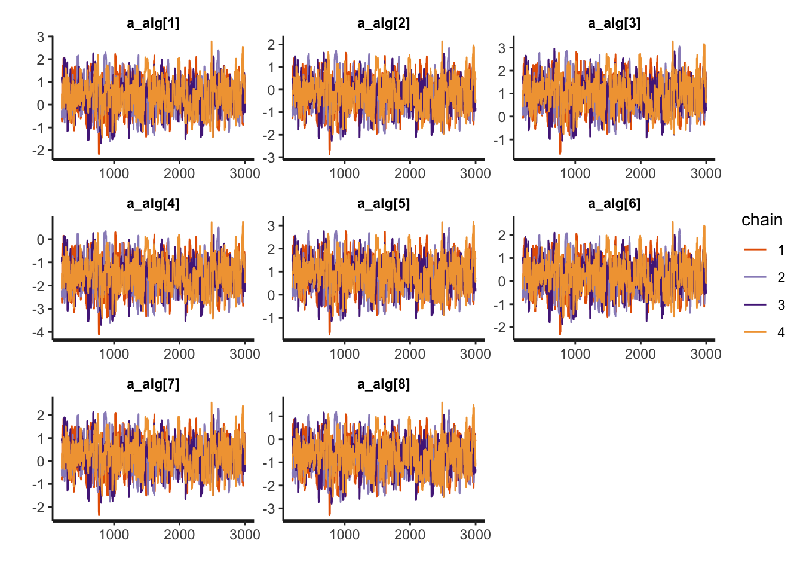
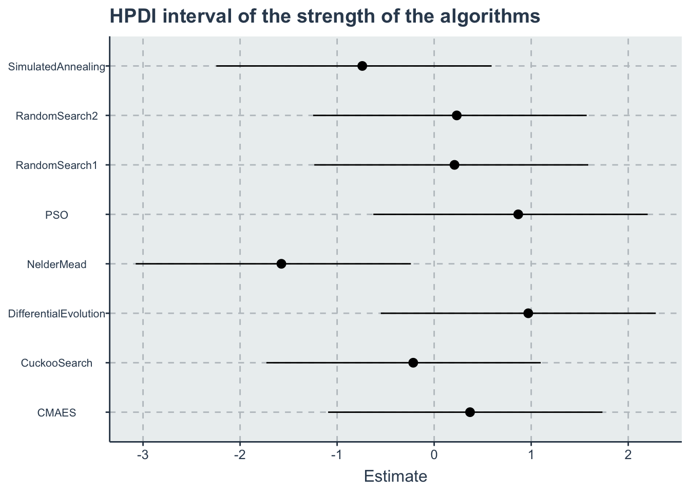

Chapter 4 Ranking
In this section, we will consider the Bradley-Terry Model for ranking algorithms in the fixed budget of 10,000 function evaluations per dimension and controlling for noise and the effect of benchmark functions
- RQ3: How can we rank algorithm different optimization algorithms given a budget of 10,000 evaluations per dimension in noisy benchmarks?
4.1 Data preparation
We start importing the dataset
The BT model formulation that we use has a specific data format, where we have one column with algo_0 (with index of each algorithm) another column with algo_1 and a third column with who won (algo 0 or algo 1),
First lets select only the data that we are interested and create ranking by the each run in each group (by the simNumber). To avoid ties (dealing with those on next session) we will rank ties randomly
d1 <- dataset %>%
dplyr::select(Algorithm, CostFunction, SD, Budget=MaxFevalPerDimensions, simNumber, TrueRewardDifference, OptimizationSuccessful) %>%
dplyr::filter(OptimizationSuccessful & Budget==10000 & SD==3.0) %>%
dplyr::select(-Budget, -OptimizationSuccessful, -SD) %>%
dplyr::group_by(CostFunction, simNumber) %>%
dplyr::mutate(rankReward=rank(TrueRewardDifference, ties.method = 'random')) %>%
dplyr::ungroup() %>%
dplyr::select(-TrueRewardDifference)kable(dplyr::sample_n(d1,size=10), booktabs=T, format.args = list(scientific = FALSE), digits = 3) %>%
kable_styling(bootstrap_options = c("striped", "hover", "condensed"))| Algorithm | CostFunction | simNumber | rankReward |
|---|---|---|---|
| PSO | ChungReynoldsN2 | 7 | 1 |
| SimulatedAnnealing | RosenbrockRotatedN6 | 6 | 7 |
| PSO | LunacekBiRastriginN6 | 6 | 2 |
| SimulatedAnnealing | ThreeHumpCamelBack | 2 | 7 |
| CuckooSearch | ChenBird | 8 | 1 |
| RandomSearch2 | QingN2 | 5 | 3 |
| CMAES | Shubert | 0 | 7 |
| RandomSearch2 | BentCigarN6 | 5 | 5 |
| RandomSearch1 | Schwefel2d26N6 | 5 | 4 |
| CuckooSearch | QingN2 | 7 | 2 |
Now to compare the ranks we need to pivot wider the data frame and based on that we will expand to the dataset in the appropriated format
kable(dplyr::sample_n(d1_wide,size=10), booktabs=T, format.args = list(scientific = FALSE), digits = 3) %>%
kable_styling(bootstrap_options = c("striped", "hover", "condensed"))| CostFunction | simNumber | NelderMead | PSO | SimulatedAnnealing | CuckooSearch | DifferentialEvolution | RandomSearch1 | RandomSearch2 | CMAES |
|---|---|---|---|---|---|---|---|---|---|
| RosenbrockRotatedN6 | 3 | 8 | 3 | 6 | 7 | 1 | 5 | 4 | 2 |
| ChenV | 3 | 7 | 3 | 2 | 6 | 8 | 4 | 1 | 5 |
| ChenBird | 9 | 8 | 4 | 2 | 7 | 1 | 3 | 5 | 6 |
| ChungReynoldsN2 | 0 | 7 | 4 | 8 | 6 | 2 | 5 | 3 | 1 |
| ChenBird | 5 | 3 | 6 | 5 | 1 | 2 | 4 | 8 | 7 |
| ChenBird | 6 | 7 | 4 | 5 | 1 | 2 | 6 | 3 | 8 |
| Schwefel2d23N6 | 6 | 7 | 3 | 8 | 6 | 2 | 4 | 5 | 1 |
| Trigonometric1N6 | 5 | 2 | 5 | 1 | 6 | 3 | 4 | 8 | 7 |
| PinterN6 | 8 | 8 | 2 | 6 | 7 | 1 | 4 | 5 | 3 |
| Trigonometric1N6 | 7 | 8 | 6 | 3 | 2 | 4 | 7 | 1 | 5 |
Now we need to modify this data set and expand it so we have the pairwise comparisons
First let’s get the number of algorithms and create combination of all possible 2 by 2 comparisons without repeating
algorithms <- get_index_names_as_array(d1$Algorithm)
n_algorithms <- length(algorithms)
comb <- gtools::combinations(n=n_algorithms, r=2, v=seq(1:n_algorithms), repeats.allowed = F)The pairs combinations looks like this (for algo_0 and algo_1):
| 1 | 2 |
| 1 | 3 |
| 1 | 4 |
| 1 | 5 |
| 1 | 6 |
| 1 | 7 |
| 1 | 8 |
| 2 | 3 |
| 2 | 4 |
| 2 | 5 |
| 2 | 6 |
| 2 | 7 |
| 2 | 8 |
| 3 | 4 |
| 3 | 5 |
| 3 | 6 |
| 3 | 7 |
| 3 | 8 |
| 4 | 5 |
| 4 | 6 |
| 4 | 7 |
| 4 | 8 |
| 5 | 6 |
| 5 | 7 |
| 5 | 8 |
| 6 | 7 |
| 6 | 8 |
| 7 | 8 |
Note that each row of d_wide will be expanded into 28 rows. Giving a dataset with a total of 8400 rows.
The following code can a bit slow to run due to the double for loops (there is probably a way to vectorize this and make it run faster), but for building this appendix we will not run, instead we will run it once, save this data, and load it when needed. It takes a couple of minutes but if you have a lot of data and algorithms it can easily go for hours
We will use a progress bar to follow the data frame creation.
1- We initialize a tibble data frame
2- First we loop through the wide data frame d1_wide row by row
3- For each row we will loop through the different combinations in the comb variable to create the rows of the data frame. We add each row to the initial dataframe
pb <- progress::progress_bar$new(format = "[:bar] :current/:total (:percent)", total = nrow(d1_wide))
df_out <- dplyr::tribble(~algo0_name, ~algo0, ~algo1_name, ~algo1, ~y, ~simNumber, ~CostFunction)
for(i in 1:nrow(d1_wide))
{
current_row <- d1_wide[i,]
for(j in 1:nrow(comb)){
comb_row <- comb[j,]
algo0_name <- algorithms[comb_row[1]]
algo0 <- comb_row[1]
algo0_rank <- current_row[[1,algo0_name]]
algo1_name <- algorithms[comb_row[2]]
algo1 <- comb_row[2]
algo1_rank <- current_row[[1,algo1_name]]
diff_rank <- algo1_rank - algo0_rank
y <- ifelse(diff_rank<0, 1, 0)
df_out <- add_row(df_out,
algo0_name=algo0_name,
algo0=algo0,
algo1_name=algo1_name,
algo1=algo1,
y=y,
simNumber=current_row$simNumber,
CostFunction=current_row$CostFunction)
}
pb$tick()
}
saveRDS(df_out, file="./data/ranking.RDS")Visualizing how the data frame looks like
df_out <- readRDS("./data/ranking.RDS")
kable(dplyr::sample_n(df_out,size=10), "html", booktabs=T, format.args = list(scientific = FALSE), digits = 3) %>%
kable_styling(bootstrap_options = c("striped", "hover", "condensed"))| algo0_name | algo0 | algo1_name | algo1 | y | simNumber | CostFunction |
|---|---|---|---|---|---|---|
| CMAES | 1 | RandomSearch1 | 6 | 1 | 5 | XinSheYang2N2 |
| PSO | 5 | SimulatedAnnealing | 8 | 0 | 2 | Schwefel2d4N6 |
| NelderMead | 4 | RandomSearch2 | 7 | 1 | 3 | QingN2 |
| CuckooSearch | 2 | SimulatedAnnealing | 8 | 1 | 0 | DiscusN2 |
| CuckooSearch | 2 | NelderMead | 4 | 0 | 9 | Schwefel2d26N6 |
| PSO | 5 | RandomSearch2 | 7 | 1 | 1 | ZakharovN2 |
| CMAES | 1 | NelderMead | 4 | 1 | 2 | SalomonN2 |
| CuckooSearch | 2 | SimulatedAnnealing | 8 | 1 | 1 | Price1 |
| NelderMead | 4 | SimulatedAnnealing | 8 | 1 | 0 | Giunta |
| RandomSearch2 | 7 | SimulatedAnnealing | 8 | 0 | 4 | Schwefel2d21N6 |
4.2 Stan model
The Stan model is specified in the file: './stanmodels/rankingmodel.stan'. Note that at the end of the model we commented the generated quantities. This block generates the predictive posterior y_rep and the log likelihood, log_lik. These values are useful in diagnosing and validating the model but the end file is extremely large (~1Gb for 2000 iterations) and make many of the following calculations slow. If the reader wants to see these values is just to uncomment and run the stan model again
// Relative improvement model
// Author: David Issa Mattos
// Date: 22 June 2020
//
//
data {
int <lower=1> N_total; // Sample size
int y[N_total]; //variable that indicates which one wins algo0 oor algo 1
int <lower=1> N_algorithm; // Number of algorithms
int <lower=1> algo0[N_total];
int <lower=1> algo1[N_total];
// //To model the influence of each benchmark
// int <lower=1> N_bm;
// int bm_id[N_total];
}
parameters {
real a_alg[N_algorithm]; //Latent variable that represents the strength value of each algorithm
}
model {
real p[N_total];
a_alg ~ normal(0,2);
for (i in 1:N_total)
{
p[i] = a_alg[algo1[i]] - a_alg[algo0[i]];
}
y ~ bernoulli_logit(p);
}
//Uncoment this part to get the posterior predictives and the log likelihood
//But note that it takes a lot of space in the final model
// generated quantities{
// vecor [N_total] y_rep;
// vector[N_total] log_lik;
// for(i in 1:N_total){
// real p;
// p = a_alg[algo1[i]] - a_alg[algo0[i]];
// y_rep[i] = bernoulli_logit_rng(p);
//
// //Log likelihood
// log_lik[i] = bernoulli_logit_lpmf(y[i] | p);
// }
// }Let’s compile and start sampling with the Stan function. In the data folder you can find the specific data used to fit the model after all transformations "./data/rankingmodel-data.RDS"
standata <- list(
N_total=nrow(df_out),
y = as.integer(df_out$y),
N_algorithm = length(algorithms),
algo0=df_out$algo0,
algo1=df_out$algo1
)
saveRDS(standata, file = "./data/rankingmodel-data.RDS")For computation time sake we are not running this chunk every time we compile this document. From now on we will load from the saved Stan fit object. However, when we change our model or the data we can just run this chunk separately
4.3 Diagnosis

Another diagnosis is to look at the Rhat. If Rhat is greater than 1.05 it indicates a divergence in the chains (they did not mix well). The table below shows a summary of the sampling.
kable(summary(ranking.fit)$summary) %>%
kable_styling(bootstrap_options = c('striped',"hover", "condensed" ))| mean | se_mean | sd | 2.5% | 25% | 50% | 75% | 97.5% | n_eff | Rhat | |
|---|---|---|---|---|---|---|---|---|---|---|
| a_alg[1] | 0.3696071 | 0.0274756 | 0.7032806 | -1.0712309 | -0.0930206 | 0.3837413 | 0.8380181 | 1.7819029 | 655.1837 | 1.003792 |
| a_alg[2] | -0.2156327 | 0.0274038 | 0.7025901 | -1.6603802 | -0.6768489 | -0.2051252 | 0.2527180 | 1.1842839 | 657.3298 | 1.003796 |
| a_alg[3] | 0.9697466 | 0.0274442 | 0.7026793 | -0.4771415 | 0.5074117 | 0.9861502 | 1.4364222 | 2.3771677 | 655.5615 | 1.003786 |
| a_alg[4] | -1.5743322 | 0.0274385 | 0.7040243 | -3.0075916 | -2.0374430 | -1.5609753 | -1.1089352 | -0.1566811 | 658.3457 | 1.003665 |
| a_alg[5] | 0.8663112 | 0.0274661 | 0.7031670 | -0.5753947 | 0.4059510 | 0.8811888 | 1.3301487 | 2.2838648 | 655.4274 | 1.003823 |
| a_alg[6] | 0.2095375 | 0.0274898 | 0.7027110 | -1.2202323 | -0.2522482 | 0.2229654 | 0.6764983 | 1.6093695 | 653.4481 | 1.003767 |
| a_alg[7] | 0.2327811 | 0.0274277 | 0.7031632 | -1.2068769 | -0.2288522 | 0.2501319 | 0.7012086 | 1.6358498 | 657.2567 | 1.003844 |
| a_alg[8] | -0.7405542 | 0.0274459 | 0.7038703 | -2.1842576 | -1.2029190 | -0.7252634 | -0.2739076 | 0.6674933 | 657.7034 | 1.003796 |
| lp__ | -4761.6122712 | 0.0383782 | 2.0180572 | -4766.4097965 | -4762.7381715 | -4761.2851077 | -4760.1370666 | -4758.6808222 | 2765.0207 | 1.002815 |
4.4 Results and Plots
First let’s get the HPDI interval for the “strength” parameters. Then we will sample the posterior and rank them and present the ranks with their respective posteriors.
hpdi <- get_HPDI_from_stanfit(ranking.fit)
hpdi_algorithm <- hpdi %>%
dplyr::filter(str_detect(Parameter, "a_alg\\[")) %>%
dplyr::mutate(Parameter=algorithms) #Changing to the algorithms labels
p_alg<-ggplot(data=hpdi_algorithm, aes(x=Parameter))+
geom_pointrange(aes(
ymin=HPDI.lower,
ymax=HPDI.higher,
y=Mean))+
labs(y="Estimate", x="Algorithm", title = "HPDI interval of the strength of the algorithms")+
coord_flip()
p_alg #+ plot_annotation(title = 'HPDI interval for the algorithms strength')
Computing the ranks
posterior <- rstan::extract(ranking.fit)
a_alg <- as_tibble(posterior$a_alg)
colnames(a_alg) <- algorithms
#sampling from the posterior
s <- dplyr::sample_n(a_alg, size = 1000, replace=T)
s <- dplyr::mutate(s, rown = row_number())
wide_s <- tidyr::pivot_longer(s, cols=all_of(algorithms), names_to = "Algorithm", values_to = "a_alg")
rank_df <- wide_s %>%
dplyr::group_by(rown) %>%
dplyr::mutate(Rank = rank(-a_alg, ties.method = 'random')) %>%
dplyr::ungroup() %>%
dplyr::select(-a_alg) %>%
dplyr::group_by(Algorithm) %>%
dplyr::summarise(MedianRank = median(Rank),
VarianceRank = var(Rank)) %>%
dplyr::arrange(MedianRank)rank_df_table <- rank_df
colnames(rank_df_table) <- c("Algorithm","Median Rank", "Variance of the Rank")
kable(rank_df_table, "html") %>%
kable_styling(bootstrap_options = c('striped',"hover", "condensed" ))| Algorithm | Median Rank | Variance of the Rank |
|---|---|---|
| DifferentialEvolution | 1 | 0.0599640 |
| PSO | 2 | 0.0599640 |
| CMAES | 3 | 0.0216216 |
| RandomSearch2 | 4 | 0.2472713 |
| RandomSearch1 | 5 | 0.2358999 |
| CuckooSearch | 6 | 0.0000000 |
| SimulatedAnnealing | 7 | 0.0000000 |
| NelderMead | 8 | 0.0000000 |
a_alg <- c("a_alg[1]",
"a_alg[2]",
"a_alg[3]",
"a_alg[4]",
"a_alg[5]",
"a_alg[6]",
"a_alg[7]",
"a_alg[8]")
rename_pars <- c(paste(rep('a_',length(algorithms)),algorithms, sep = ""))
t<-create_table_model(ranking.fit, c(a_alg),rename_pars)
saveRDS(t,'./statscomp-paper/tables/datafortables/ranking-par-table.RDS')